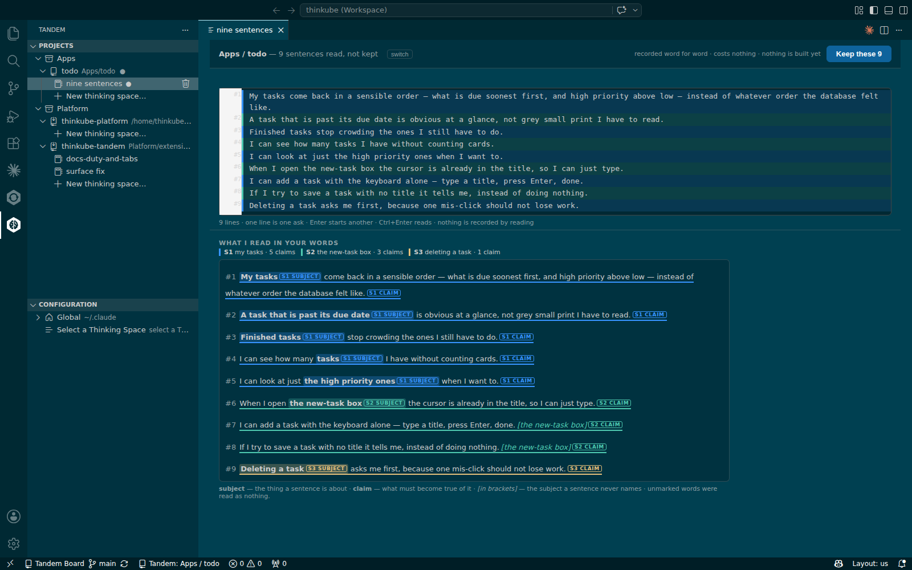
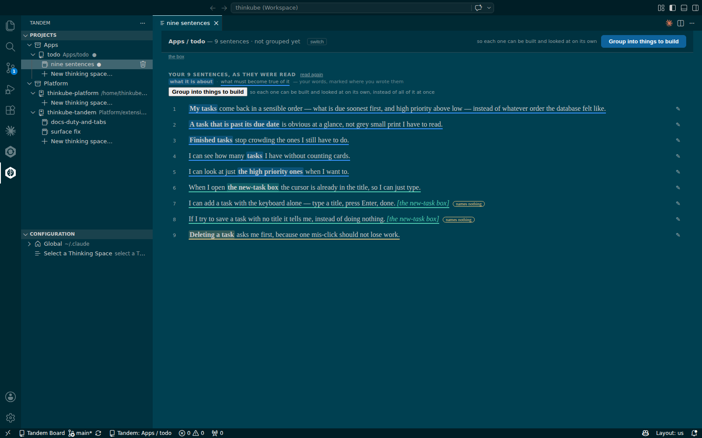
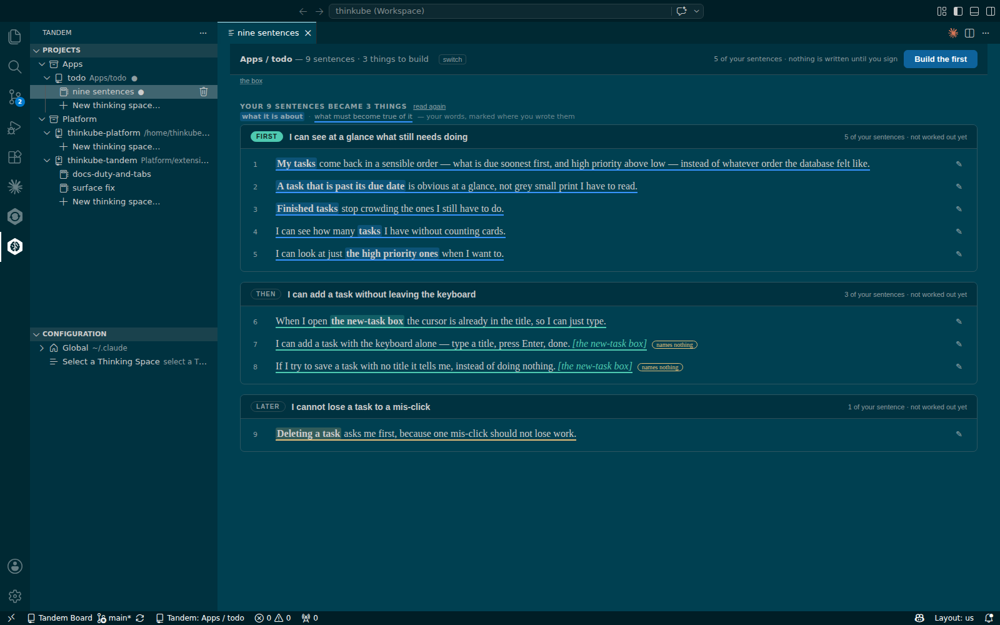
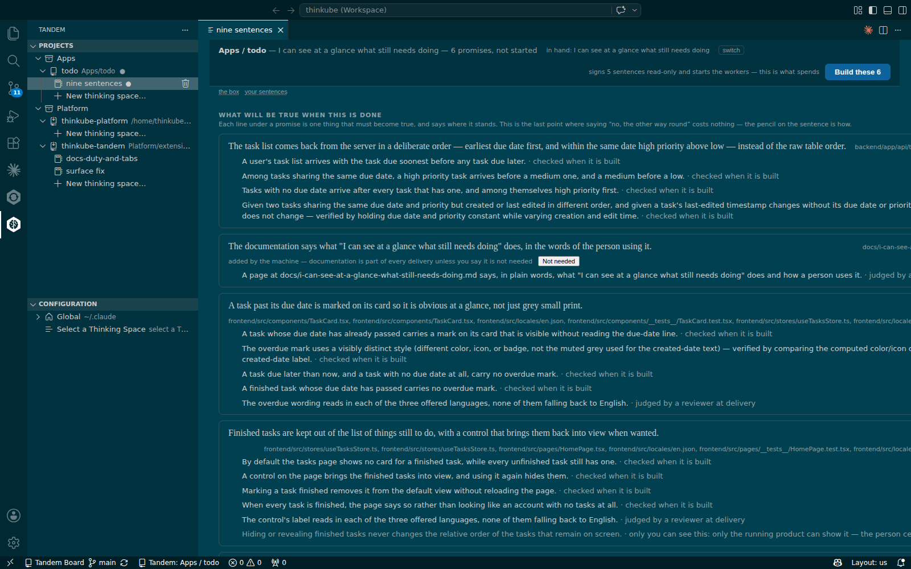
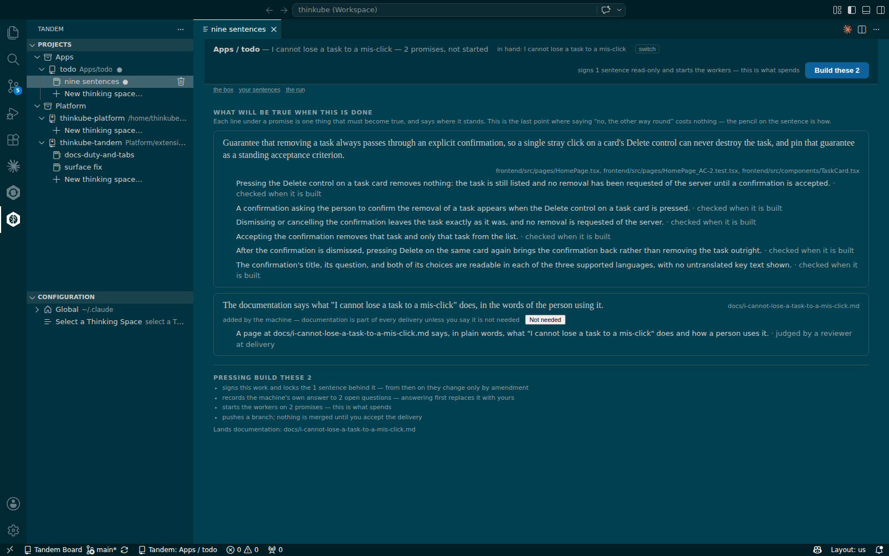
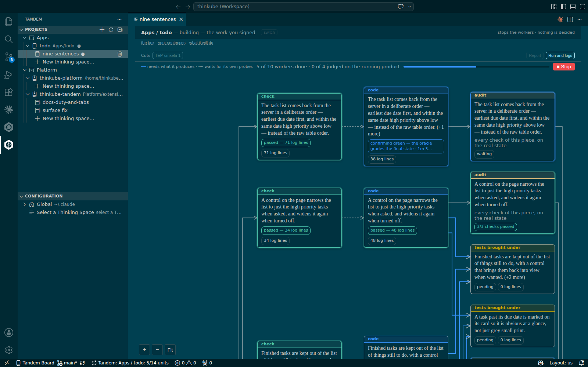
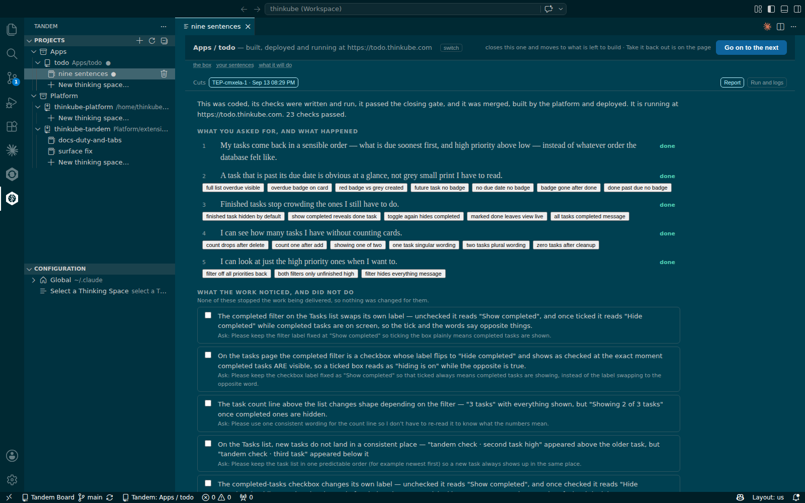
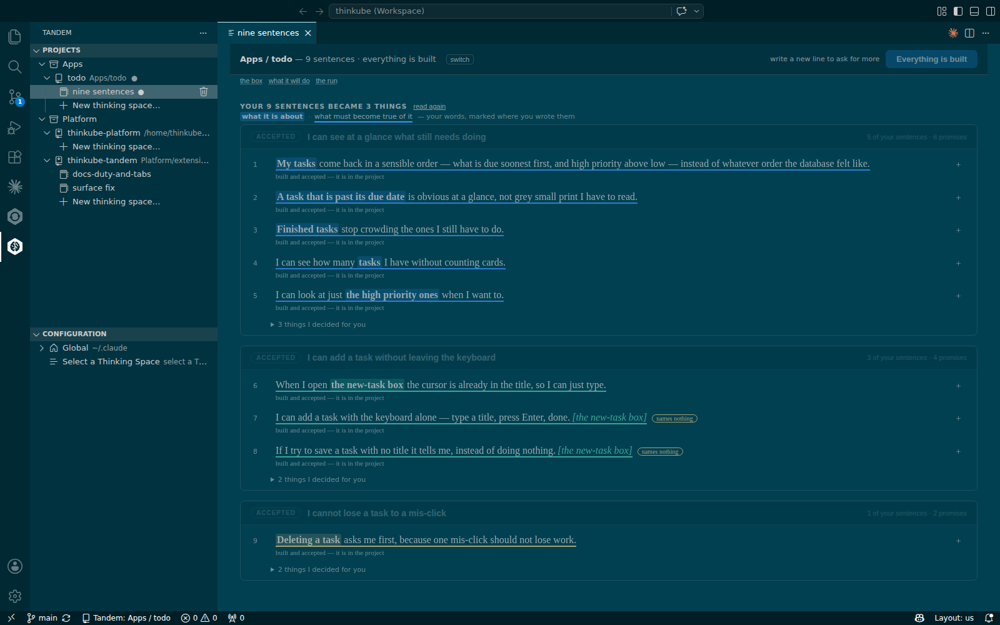

Build your first application change with Tandem
Overview
Basic idea
You say what you want in the words you would use with a person. Tandem turns the words into promises, proves each promise with a check written before the code, builds the change, deploys it and tells you, sentence by sentence, what happened.
-
Reading records nothing. Tandem shows how it understood each sentence before anything is kept, so a misreading costs one press.
-
Your words are the record. Once kept, your sentences are never edited by the machine; everything derived from them can be made again.
-
Signing freezes what runs. The run builds exactly the promises you signed.
-
The report answers your sentences. One word per sentence, with the checks that proved it; no diff to read.
-
The decisions are yours. Keeping, signing and accepting are presses only you make. Claude Code can write the sentences, and Tandem’s tools refuse the rest to it.
What you’ll accomplish
You make a todo app from the web app template, write nine sentences about it, and build the first of the things Tandem groups them into, until it runs at the app’s address.
What to know before starting
Required
-
Thinkube IDE open, with the Tandem icon in the activity bar.
Optional
-
How a sentence becomes a promise: one sentence followed all the way to its checks.
-
The words on the page: every label and state word.
Supported hardware
| Node | Architecture | GPU | On the reference walk |
|---|---|---|---|
tkamd1 |
amd64 |
none |
Thinkube IDE, where Tandem and its workers run |
tkamd2 |
amd64 |
2 × RTX 3090, 24 GB each |
— |
tkspark |
arm64 |
GB10, 121.7 GB unified |
— |
Tandem’s model rounds call Claude; the app is built and deployed by the platform like any other.
Prerequisites
Platform
-
Thinkube running, with Thinkube IDE open. Ask Claude: "what’s running?"
-
A repository Tandem knows. The walk made one: "make an app called todo from the web app template". For a repository you already have, run Tandem: Activate Repository.
Components
-
None beyond the base platform.
Time & risk
-
Estimated time: 1 h for the first thing. On the reference walk, writing, reading, keeping and grouping the nine sentences took 10 min, and each thing took 34 to 63 min from Build the first to delivered. In one of them the closing checks spent 31 min, 20 of them on one flaky frontend test.
-
Risk level: Low. Work is built on a branch and merged only when it is delivered; Take it back out reverts a delivery’s merges.
-
Rollback: On the report, press Take it back out.
-
Last updated: 2026-09-17. Written from the walk of 2026-09-13 on a fresh todo app, Tandem 2.0.334 to 2.0.343.
Instructions
Step 1. Make the app and open a space
Every thinking space is one page, and you only ever look at that page.
Ask Claude:
› make an app called todo from the web app template
Claude calls new_app, which creates the repository and activates it for Tandem.
Then click the Tandem icon. Under Projects, your repository lists its thinking spaces; choose New thinking space…. The space opens in its own editor tab. Across the top is the strip: one line saying where you are and one button, the next thing you can do.
Step 2. Write your sentences
Type what you want, one line per thing, in the words a person would use. Writing costs nothing: the line under the box says one line is one ask · Enter starts another · Ctrl+Enter reads · nothing is recorded by reading.
Or ask Claude: "put these lines in the box of a new thinking space", followed by the lines. Claude calls save_draft.
The nine lines of the walk:
My tasks come back in a sensible order — what is due soonest first, and high
priority above low — instead of whatever order the database felt like.
A task that is past its due date is obvious at a glance, not grey small print.
Finished tasks stop crowding the ones I still have to do.
I can see how many tasks I have without counting cards.
I can look at just the high priority ones when I want to.
When I open the new-task box the cursor is already in the title, so I can just type.
I can add a task with the keyboard alone — type a title, press Enter, done.
If I try to save a task with no title it tells me, instead of doing nothing.
Deleting a task asks me first, because one mis-click should not lose work.The strip then says 9 lines written, not read.
Step 3. Read these 9
Press Read these 9. Every sentence comes back with the two parts the machine read in it: the subject highlighted, the claim underlined. What I read in your words lists the subjects, my tasks, the new-task box, deleting a task, with how many claims each carries.

A sentence that never names its subject shows the subject in brackets and names nothing. If the reading is wrong, change the words and press Read it again.
Step 4. Keep these 9
Press Keep these 9. The page your sentences opens with the nine sentences, each with a pencil to say it differently and a plus to amend it.

Step 5. Group into things to build
Press Group into things to build. Each thing gets a name, the sentences it carries, and a suggested order: first, then, later. Proposing decides nothing.

On the walk the nine sentences became three things:
| Thing | Sentences |
|---|---|
I can see at a glance what still needs doing |
1–5 |
I can add a task without leaving the keyboard |
6–8 |
I cannot lose a task to a mis-click |
9 |
Step 6. Build the first
Press Build the first. The strip counts working out what to build — N of M subjects done. When the last subject is done, the page what it will do opens.
Under What will be true when this is done it shows one promise for each claim, the files it lands in, and under each promise the lines that must become true, each with where it stands:
-
checked when it is built: a check, written before the code by a worker that never sees the code, will prove it;
-
judged by a reviewer at delivery: a reviewer reads the finished work once;
-
only you can see this: only the running product can show it, and you confirm it.

Every thing also carries the promise The documentation says what "<the thing>" does, in the words of the person using it. It lands a page in the project’s docs/ folder. Press Not needed on it, with your reason, when no page applies.
Step 7. Sign: Build these N
At the bottom of the work page, Pressing Build these N says what the press does: it signs this work and locks the sentences behind it, records the machine’s own answers to the open questions, starts the workers, and pushes a branch. Nothing is merged until the delivery.

Press Build these N. The strip says building — <the thing’s name>, the run page opens, and Stop is the only other button.
Step 8. Watch it build
The page the run shows one card per piece of work, titled with the promise it keeps, with a state word: ready, running, needs you, passed, failed, never ran. The header counts N of M workers done · N of M judged on the running product.

needs you means a worker stopped on a question only you can answer, about what you want. The page offers a box and Send. The run is a process of its own: closing or reloading the window does not end it.
Step 9. Read the report
When the run ends, the strip says where it ended, such as built, deployed and running at <address>. The report opens with one paragraph in plain words, then What you asked for, and what happened: each sentence with a word, and under it the checks that proved it.

On the walk the first thing ended with 23 checks passed, and the four reviewers on the running product judged 14 lines. Further down, What the work noticed, and did not do lists what the reviewers saw and did not settle.
Step 10. Decide
The buttons at the end are yours:
-
Go on to the next closes this thing and moves to what is left to build.
-
Take it back out reverts this delivery’s merges and pushes.
-
Run it again starts the signed work again; nothing you wrote changes.
Press Go on to the next. The strip offers Build the first for the next thing, and the path from Step 6 repeats. When the last thing is built, the strip says 9 sentences · everything is built and every sentence reads built and accepted — it is in the project.

Step 11. Next steps
-
Build the improvements Tandem’s reviewers suggest: the reviewers' findings as the next sentences.
-
Reading the report and deciding: every section and button of the report.
-
While it builds: what happens in each phase of a run.
Troubleshooting
| Symptom | Cause | Fix |
|---|---|---|
After Claude made the app, Projects still says no repositories yet |
The tree reads the repositories when the window loads |
Reload the window; the new repository appears with its spaces. |
In a freshly opened window, the first click on a space in Projects opens nothing |
The extension is still starting |
Click again after a few seconds. |